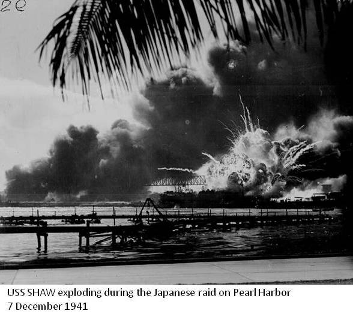

Pearl Harbor
Pearl Harbor was not so much a battle as a one-sided attack that came with such shock and surprise that those being attacked were scarcely able to defend themselves. The historic controversies surrounding the Japanese attack on Pearl Harbor have centered on the issue of who knew what and when.
University of Maryland historian Gordon W. Prange, working with associates Donald M. Goldstein and Katherine V. Dillon, has covered the first six months of America's involvement in World War II in considerable detail in four books:
|
At Dawn We Slept: The Untold Story of Pearl Harbor.
|
The New York Times called Prange's At Dawn We Slept "impossible to forget." Prange's tireless research into the entire saga of Pearl Harbor leaves little doubt as to the validity of his conclusions. Includes photographs.
|
|
Pearl Harbor: The Verdict of History.
|
In this sequel to At Dawn We Slept, Prange goes into considerable detail to examine how the attack came about and whether there really was some sort of conspiracy involving the president to conceal foreknowledge of the attack in order to thwart the "America First" movement, whose members opposed American entry into the war.
|
|
December 7, 1941: The Day the Japanese Attacked Pearl Harbor.
|
By Donald M. Goldstein, based on work of Gordon Prange. In this book Goldstein gets into the chronological details of the "date which will live in infamy."
|
|
Miracle at Midway.
|
Prange's history of the Battle of Midway details the turning point of World War II against Japan. Prange examined both Japanese and American sources, eyewitness accounts, and so on.
|

What can we conclude about President Franklin Roosevelt and Pearl Harbor? We can certainly say that President Roosevelt knew that Japan was up to no good and that its war against China, which had been going on since 1937, was likely to expand into other parts of East and Southeast Asia. One glance at a map will show that the United States' Philippine Islands, located squarely in the center of Japan's sphere of interest (Indonesia, Indochina, and the surrounding regions) were likely to be attacked. It could, therefore, be assumed that any Japanese action would begin first against the Philippines, and General Douglas MacArthur's preparations were receiving full support from Washington.
Defenses throughout the Pacific, in fact, were being beefed up in anticipation of possible Japanese action. But the charge that FDR knew that the December 7 attack was coming, leveled in part to deflect blame from the commanders on the scene in Hawaii, fails to stand up on many grounds.
First, if a conspiracy had existed to conceal knowledge of an impending Japanese attack, it would have had to involve top military leaders, including Admiral Leahy, FDR's chief of staff, the secretaries of the army and navy (both Republicans), and other officials of medium to high rank, all of whom would necessarily have been aware of any communications revealing specific Japanese intentions. Second, Franklin Roosevelt loved the navy. He even took vacations on warships and guided Navy ships into waters off his beloved coast of Maine. That he would have deliberately sacrificed lives and ships to make what amounted to a political point is inconsistent with everything we know about Roosevelt.
Furthermore, if FDR had known the attack was coming and wished to allow a surprise attack to go forward, he could still have directed army and navy forces in Hawaii to be placed on high alert in a battle-ready status under secret orders, without revealing to the world that he knew the attack was coming. The surprise attack would still have had the same shock value to the American people, but it could have been far less devastating. Despite all the speculation, it is exceedingly doubtful that Roosevelt actually knew the time and location of the Japanese attack.
Certainly there is substantial evidence that a lot of people ignored warning signs. The Japanese aircraft were picked up and presumed to be B-17s coming in from the States, never mind that they would have been miles off course and going in the wrong direction; a Japanese submarine was spotted off the mouth of Pearl Harbor; a warning telegram went astray; and so on. All of those things amounted to massive failures of communication and intelligence, but they fall far short of creating evidence of a deliberate conspiracy. The United States was surprised, shocked, and embarrassed by Pearl Harbor.
As the Battle of Midway was soon to demonstrate, however, the United States was resilient, resourceful, and more than ready to take up the fight. Army Chief of Staff, General George C. Marshall, and Chief of Naval Operations, Admiral Ernest J. King, begin organizing America's military forces for action in coordination with their British counterparts. Marshall's superb performance throughout the war and after has placed him with Washington and Grant as America's most important military leaders. He later served as Secretary of State under President Harry Truman and was author of the Marshall Plan.
Attack on Pearl Harbor Newsreel

More Resources